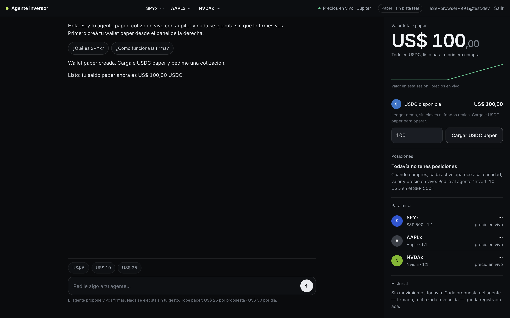
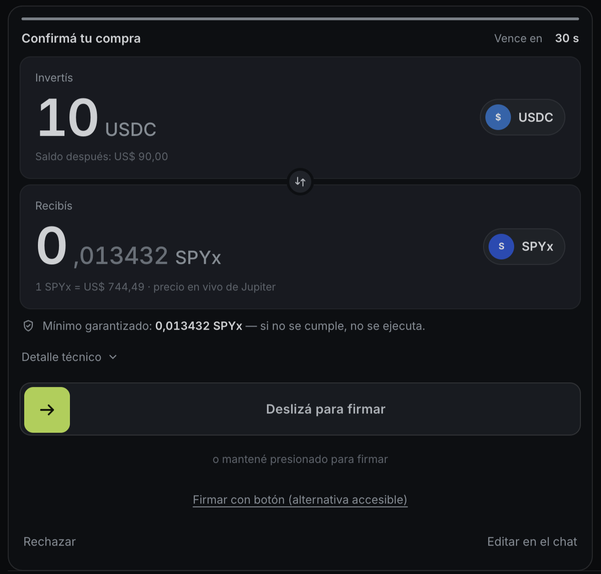
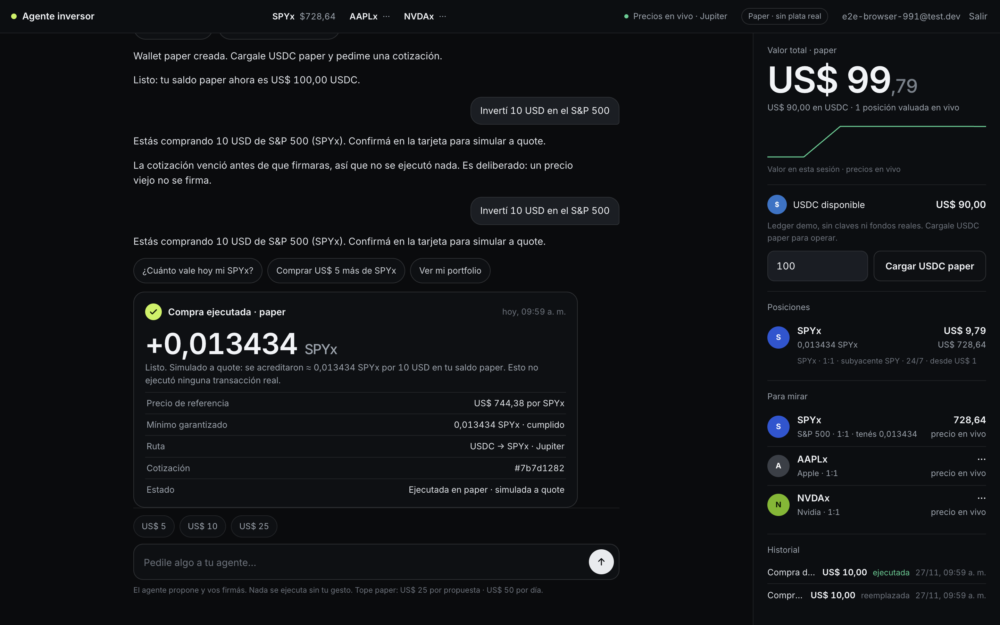

01
Ask in plain language
“Invest 100 USD in the S&P 500.” Onda resolves the intent to SPYx and asks Jupiter for a live quote.
Onda is a natural-language investing agent for tokenized stocks on Solana. You ask in plain words, it quotes a real USDC → SPYx, AAPLx or NVDAx swap, and the trade only exists if you confirm it in Onda. Reject it or let it expire and no money moves.
Internal demo. Paper execution only — real Jupiter prices, simulated fills, no real funds, no keys, no custody. Not financial advice.

The real confirmation moment in the live app: the swap object, its minimum-out, and the slide-to-sign gesture. Screenshot from the production demo.
No hidden execution and no “trust the model”. Every proposal shows the asset, the amount, the quote and the minimum you would receive — before anything is signed.

01
“Invest 100 USD in the S&P 500.” Onda resolves the intent to SPYx and asks Jupiter for a live quote.
02
One proposal at a time, with a single visible countdown. Slide to sign, reject it, or let it expire — all three are safe.

03
Signed, rejected and expired proposals all land in your history, backed by an append-only audit log with a hash chain.
The confirmation gate lives in the backend, not in the chat and not in the model. That is the whole thesis: an agent can operate a wallet usefully only when the system — not the LLM — controls the money.
This is a harmless toy version of the app's slide-to-sign. Drag it to the end — in the real demo, that is the moment a paper fill is recorded.
Keyboard: focus the slider and use the arrow keys.
Use Onda's own app today, or bring the agent you already have. The MCP door is specified in spec 07 and on the roadmap — it is not live yet, and we would rather say that plainly than fake a connect button.
| Door | Who the agent is | Where you sign | Status |
|---|---|---|---|
| Onda app | Onda's built-in agent | In Onda, slide-to-sign | Live demo |
| Bring your own agent (MCP) | ChatGPT, Claude, Cursor, Claude Code — any MCP client | Still in Onda, slide-to-sign. Always. | Spec 07 · roadmap |
The connect-once story, when it ships: you connect your agent to Onda once, it can quote and propose, and every operation still waits for your gesture in Onda. No MCP tool can confirm or execute — by design, there is no execute tool.
Onda today is an internal demo with paper execution only. Prices, quotes and simulations are real and live from Jupiter; balances and fills are a clearly-labeled paper ledger. It does not trade real money, does not promise returns, and is not financial advice. Tokenized stocks carry risk and may not be available in your jurisdiction.